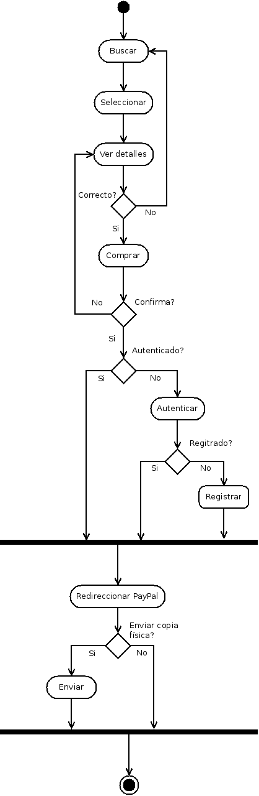

Ejercicio 1. Identificar una clase del proyecto cuyas instancias pasan a través de una serie de estados, y elebaora un diagrama de estados para esta clase.
Ejercicio 2. Descubre requerimientos no-funcionales. Una manera de hacerlo es empezando con los requerimeintos funcionales e identifacar/inventar requeriminetos asociados no funcionales
La plataforma SingAlong debe ser sencilla de utilizar
El tiempo de aprendizaje por usuario no debe ser mayor a 10 minutos
La plataforma debe incluir un tutorial básico
Tiempo de respuesta de las búsquedas de canciones o álbums o artistas
Tiempo de descarga acceptable
El tiempo de refresco de la pantalla debe ser menor a 1 segundo
El sistema deberá soportar x transacciones/segundo
El tiempo de recuperación de la plataforma deberá ser menor a 2 minutos
Cada dos semanas se tendrán reuniones con el cliente para revisar el proyecto, y añadir posibles mejoras
***
La plataforma Paypal debe estar activa para poder realizar las compras
No se podrán copiar productos de otros artistas, incluidos los que no se encuentren registrados en la plataforma
***
Protección de datos de cada uno de los usuarios del sistema
Impuestos aplicables a los productos en cada país
Ejercicio 3. Elabora dos diagramas de actividad que representen los procesos asociados con la publicación de un álbum y la compra de un álbum
Ejercicio 4. (Opcionalmente)Elabora otros diagramas (estado, actividad, secuencia, colaboración, etc.)
Ejercicio 5. Verifica que los requerimientos del documento están bien estructurados, y si es necesario, modifcalo. Incorpora los diagramas en el documento.